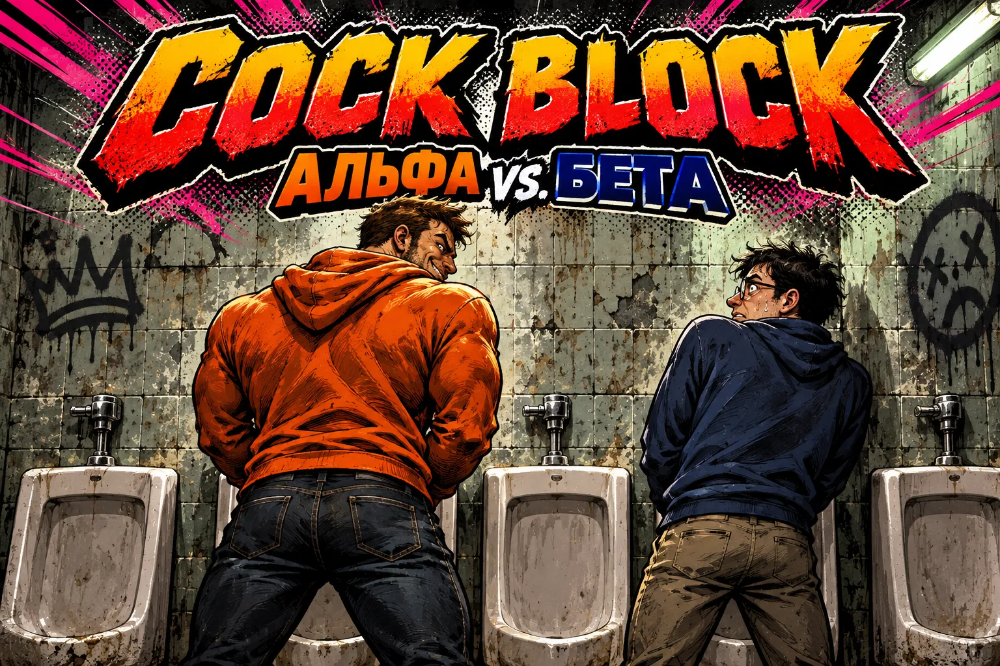

Альфа или бета
COCK BLOCK
Заходишь в туалет. Ряд писсуаров, кто-то уже стоит. Куда встанешь? Игра считает, на сколько процентов твой выбор альфа или бета.
Обе шкалы игра считает симуляцией: 3000 раз проигрывает, кто зайдёт следом и куда встанет.
АЛЬФА
Уровень 1
Баллы
Каждое действие даёт балл или множитель. Меняй число - уровень пересчитается сразу. Сохраняется в этом браузере.
Итог
0%альфа
Средний процент за пройденные уровни.